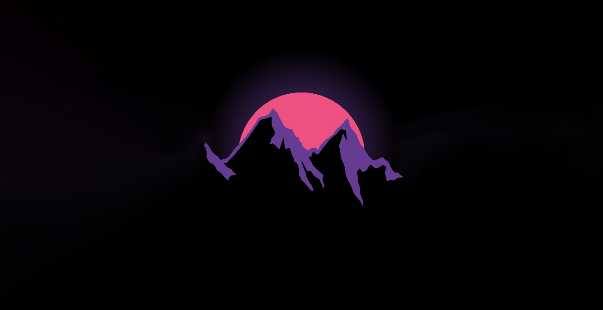

Welcome to iAnime
Immerse yourself in a symphony of colorful characters, intricate storylines, and breathtaking animation as we embark on a journey through the boundless landscapes of anime.

Anime, Manga, and Light novel
News, Development, and Trends.

Thank You
Thank you for embarking on this anime journey with us. Until next time!